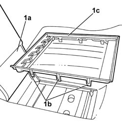
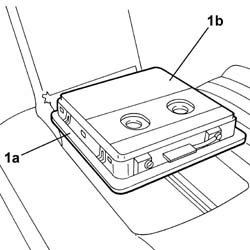

7050A79 Rear seat backrest ski holder flap - R.R. with backrest removed
- Path
- Procedures > 70 FITTINGS > 7050 REAR SEATS > 7050A REAR SEAT ASSEMBLY > 7050A79 Rear seat backrest ski holder flap - R.R. with backrest removed
- Kind
- repair procedure (removal / refitting; the operation number is the code)
- Applies to
- all engines; all production periods
- Interactive page
- https://sloeber94.github.io/elrnDB-lThss/en/#/197474
Applies to: all engines; all production periods
 Removing
Removing
 Refitting
Refitting1. Open the armrest (1a) and, acting on the retaining tabs (1b), release the trim (1c) and remove it.

Applies to: all engines; all production periods
1. Act on the side retaining tabs (1a) and remove the ski holder flap (1b).

Applies to: all engines; all production periods
Refitting
Removing- Fit the ski holder flap in place and check that the retaining springs are correctly inserted.
- Fit the ski holder flap in place and check that the retaining springs are correctly inserted.
- Close the armrest.